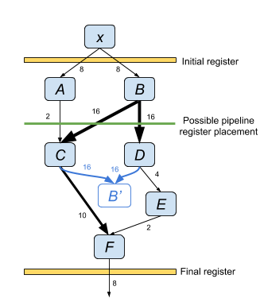
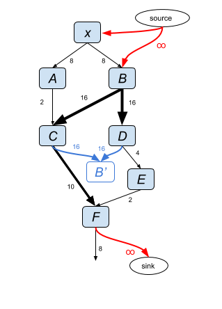

XLS Scheduling
Pipeline Scheduling
Pipeline scheduling divides the nodes of an XLS function into a sequence of stages constituting a feed-forward pipeline. Sequential stages are separated by registers enabling pipeline parallelism. The schedule must satify dependency constraints between XLS nodes as well as timing constraints imposed by the target clock frequency. Pipeline scheduling has multiple competing optimization objectives: minimize number of stages (minimize pipeline latency), minimize maximum delay of any stage (maximize clock frequency), and minimize the number of pipeline registers.
Scheduling to minimize pipeline registers
Scheduling to minimize pipeline registers can be formulated as a graph min-cut problem where the graph cut divides the nodes of the graph into separate pipeline stages and the cost of the cut is the number of bits in the pipeline register between the stages. This formulation of the pipeline scheduling problem is attractive because the graph min-cut problem can be solved in polynomial time.
In general, the XLS IR graph cannot be used directly by the min-cut algorithm because of additional constraints imposed by pipeline scheduling and features of the IR graph. As a motivating example, consider the following graph of an XLS function to be scheduled into a two-stage pipeline:

Node x is a parameter to the function, and node F is the return value. The width of the edges correlates with the (labeled) bit width of the respective operation. The bit width of the edges are edge weights in the min-cut algorithm.
The drawing above shows the initial and final pipeline registers which flops the input output on the interface boundary. In this example, a two-stage pipeline is desired so one additional pipeline register is required. The scheduling problem is to partition the nodes A through F into the two pipeline stages while minimizing register count, or alternatively formulated, identify a cut through the graph of minimum cost. Below is one possible cut resulting in a pipeline schedule where nodes A and B are in stage one and nodes C through F are in stage two.

In the pipeline generated from the example cut above pipeline registers are required for nodes A and B of bit widths 2 and 32 respectively for a total of 34 flops. However this value is inconsistent with the cost of the cut in the IR graph which is equal to the sum of weights of the cut edges: 2 + 32 + 32 = 66. To reconcile the cost function, transformations are applied to the graph about nodes with fan-out. Specifically, an artificial node N' is added for each node N with fan-out and an edge is added from each immediate successor of N to N'. The weight of each edge fanning out from N and fanning into N' is set to the original weight of the edges of N divided by the fan-out factor. In the example, the edge weight is set to 32 / 2 = 16. Below is the transformed graph. As shown, the cost of the cut (sum of edge weights) now equals the number of flops in the pipeline register (34).

For scheduling the example graph, assume the target clock period be three time units and all nodes have unit delay. In this case, not all cuts will produce a schedule which satisfies the timing constraint. Specifically, if B is scheduled in the second stage, or F is scheduled in the first stage the pipeline cannot meet the timing constraint. To ensure the min-cut results in a schedule which satisfies timing an artificial source and sink node is added to the graph. Edges with infinite weight are added from the source to nodes which must be scheduled in the first stage (or earlier in the case of parameter nodes) to satisfy timing constraints. Similar edges are added from nodes which must be scheduled in the second stage to the sink node as shown below:

One additional transformation (not shown) is required to ensure a correct pipeline. Generally, a partitioning created by a min-cut allows edges going in both directions between the partitions. However, pipeline stages do not allow circular dependencies. To enforce directionality to the edges of the cut, an edge of infinite weight is added parallel to and in the opposite direction of every edge in the graph.
After transforming the graph, a min-cut is found by applying a max flow algorithm (Ford-Fulkerson) from the artificial source node to the artificial sink node. In the running example, the min cut is edges C -> F and E -> F of cost 12. All nodes except F are placed in the first stage of the pipeline.
Generally, a pipeline can have more than two stages so a single cut is insufficient to determine a schedule. In this case a sequence of cuts is performed, one for each boundary between pipeline stages. Each min-cut partitions the nodes into two parts: the set of nodes scheduled before the respective stage boundary, and the set of node scheduled after. This imposes additional constraints on later min-cut computations. These constraints are imposed by extending infinite weight edges between thes nodes and the source or sink node in the graph.
The order in which the sequence of cuts is performed (e.g., cut the boundary between stage 0 and stage 1, then between 1 and 2, then between 2 and 3, and so on) can affect the total number of pipeline flops so, in general, multiple orders are attemped and the result with the fewest pipeline flops is kept.
Rematerialization
TODO(meheff): Finish.